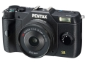

无忌
器材库
全部器材
产品年表
名词百科
榜单
器材库
> APS及其以下画幅可换镜头数码相机 > PENTAX Q7

宾得
PENTAX Q7
分类
APS及其以下画幅可换镜头数码相机
点评
0 条
图片
0 张
评测
0 篇
Q7新搭载了新的1/1.7英寸背照式CMOS影像传感器，结合先进的图像处理器“Q ENGINE”，能有效抑制各档ISO感光度的噪点，提供最高ISO 12800的感光度。
产品类型
APS及其以下画幅可换镜头数码相机
综合评分
暂无评分
无忌评测
暂无评测
规格参数
网友点评
(0)
产品图 / 样片
(0)
评测文章
(0)
规格总览
产品类型
小型传感器可换镜头数码相机
发布日期
2013-06-13
厂家推荐价格
40,000.00 （日元）
影像规格
影像传感器
CMOS
影像传感器尺寸
1/1.7英寸
总像素
1276万
有效像素
1240万
影像处理器
Q ENGINE
最大解像度
4000×3000
静态图像尺寸
JPEG[4:3]12M：4000×3000、[3:2]10M：4000×2664、[16:9]9M：4000×2248、[1:1]9M：2992×2992、RAW[4:3]12M：4000×3000
静态图像格式
JPEG, RAW
画幅比
3:2, 4:3, 16:9, 1:1
短片尺寸
[Full HD]1920×1080/30fps(16：9)、[HD]1280×720/30fps(16:9)、[VGA]640×480/30fps(4:3)
短片格式
MPEG4-AVC/H.264
防抖系统
SR防抖机构
除尘系统
DRII除尘机构
镜头和对焦
镜头卡口
Pentax Q
对焦点
脸部识别、追踪、自动对焦(25点)、手动对焦
曝光控制
测光模式
中央重点测光, 多分区评价测光, 点测光
测光范围
（ISO100）0EV~17EV
曝光模式
P（程序自动曝光）, B门, A（光圈优先自动曝光）, S（快门速度优先自动曝光）, M（手动测光曝光）
图像模式
夜景人像, 创意自动
场景模式
夜景, 烛光, 人像, 风景, 微距, 运动, 夕阳
快门速度
30-1/2000
曝光补偿
±3EV以1/3EVEV级调整
ISO感光度
100, 200, 400, 800, 3200, 6400, 12800, 自动
白平衡
日光, 白炽灯, 闪光灯, 阴天, 荧光灯, CTE, 自动, 手动, 荧光灯L
自拍
12秒, 2秒
连拍
约5.0fps，最多连拍：约5张（JPG）、；约1.5fps，最多连拍：约100张（JPG）
闪光灯
内置闪光灯
弹出式
闪光指数
4.9(ISO100・m)/7(ISO200・m)
闪光补偿
-2 至 +1EV
闪光同步模式
后帘同步, 慢速同步, 防红眼慢速同步
取景器/显示屏
LCD类型
TFT LCD
LCD尺寸
3.0英寸
LCD像素
46万
视野率
100%
文件输入/输出
存储卡
SD/SDHC, SDXC
电源
电池
D-LI68
续航能力
约250张
机身规格
颜色
黑色, 黄色, 银/黑色
尺寸
102×58×33.5mm
重量
200g
该产品暂无存档的网友点评
该产品暂无存档的产品图
评测 / 相关文章
该产品暂无存档的评测文章
相关文章
［资讯］流行亮色涂装 宾得发布Q7无反特别限量版
（原站已下线）
［试用］只为玩转接，新玩具pentax Q7开箱
（原站已下线）
［资讯］全球限量1000套 理光发布豪华版Q7套装
（原站已下线）
［试用］入手Q7，玩转COSMICAR镜头
（原站已下线）
［试用］最小无反PENTAX Q7评测
（原站已下线）
［资讯］日本Suono推出宾得 Q7/Q10/Q纯棉相机包
（原站已下线）
［资讯］宾得Q系列旗舰 PENTAX Q7图赏
（原站已下线）
［资讯］宾得 PENTAX Q7
（原站已下线）